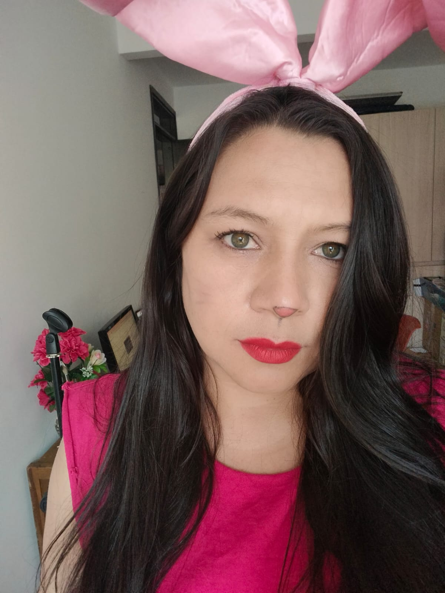
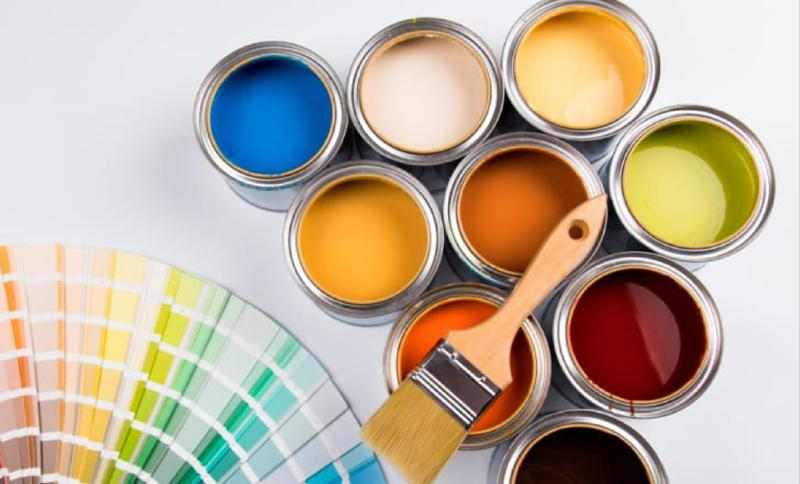
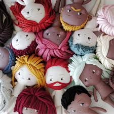

Acerca de MI
Hola Soy Gwen! Bienvenido a mi Primera Página

Trabajos
Pintura
Mis trabajos de pintra son sencillamente inspirados por la persona a la cual quiero hacerle un obsequio. No tengo un estilo de pintura definido solo pinto lo queme place en el momento.
Muñeos Personalizados
Los muñecos siempre son figuras que nos recuerdan lo que fuimos de niños. Por eso ahora que soy adulta me gusta personalizar muñecos para que los adultos recuerden que fueron niños y puedan tener memorias lindas de cuando su juguete favorito los hacía felices.